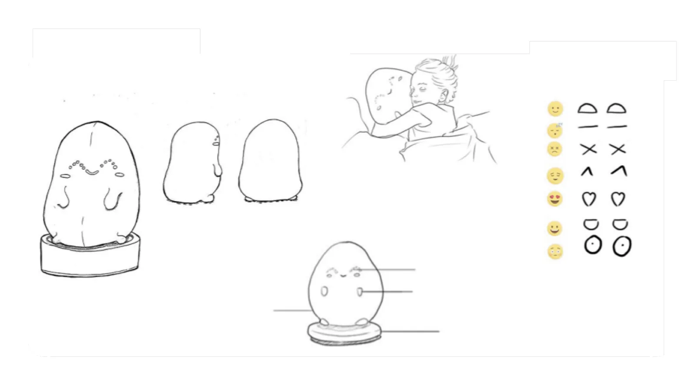
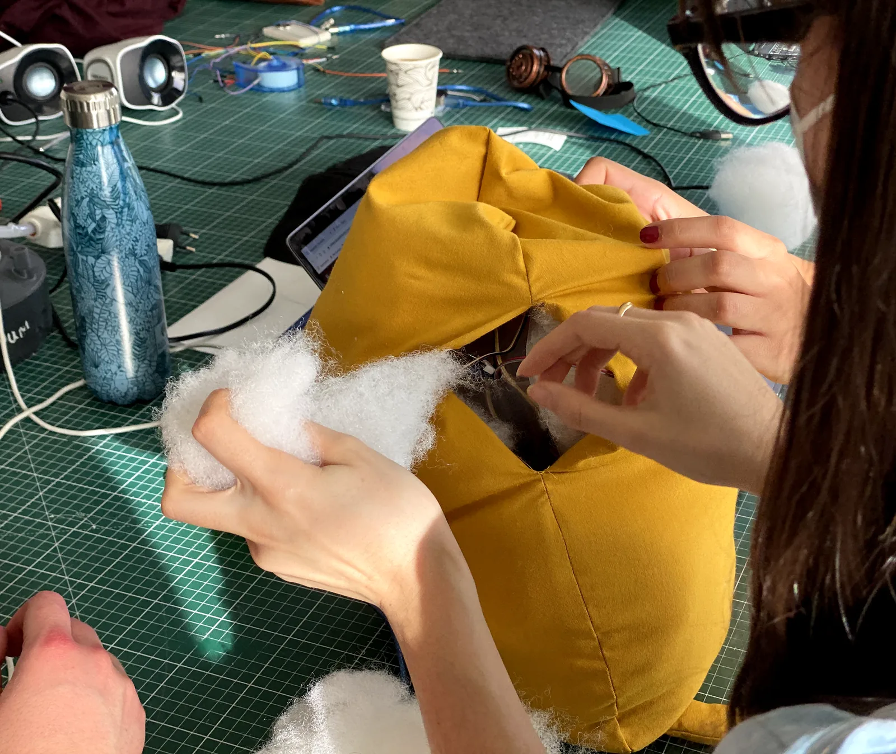
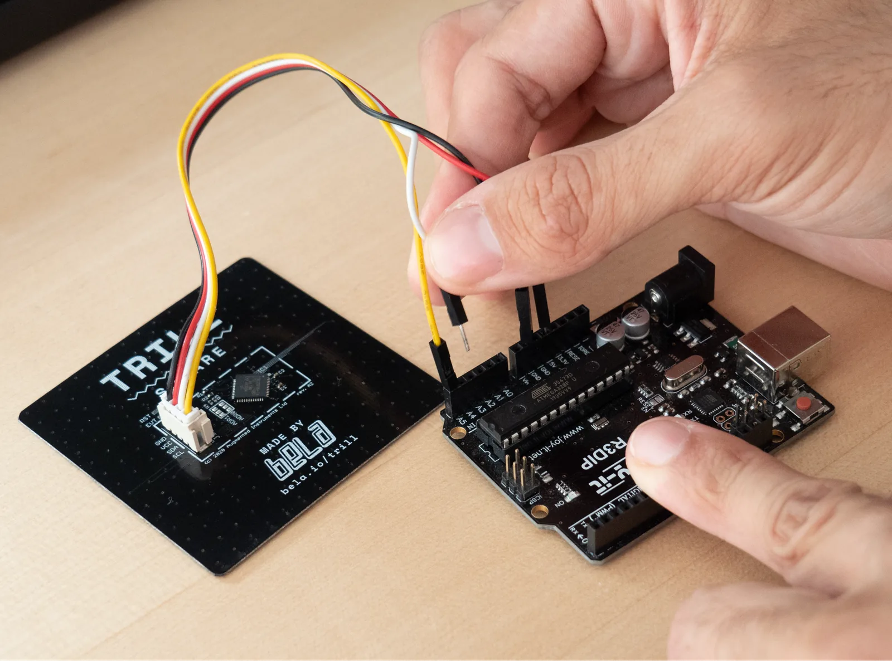

Toms est une peluche connectée pensée pour les enfants hospitalisés. Le parent envoie un message vocal, la peluche le fait entendre et affiche une émotion dans ses yeux. L’enfant répond d’un geste.
Contexte et objectif
Nous avons imaginé ce compagnon en quatre jours, pendant un workshop à L’École de design Nantes Atlantique. Le point de départ : comment aider un enfant hospitalisé et ses parents à rester en contact pendant le séjour, simplement ?
Nous avons ciblé les séjours courts. Plutôt que d’ajouter un écran de plus dans la chambre, nous avons choisi un objet familier, une peluche, qui associe la voix et les émotions. Le téléphone reste l’outil du parent.
Concept
Le parent enregistre un message vocal et choisit un emoji depuis son téléphone. La peluche diffuse la voix et traduit l’emoji en expression lumineuse dans ses yeux. Pour répondre, l’enfant appuie sur sa patte.
Chaque côté de l’échange a donc son interaction : l’écran pour le parent, le toucher pour l’enfant. L’enfant n’a pas d’interface à apprendre. Il appuie sur la patte de sa peluche, et c’est tout le parti pris du concept.
Conception

Explorer la forme
premières pistes pour la silhouette et les expressions.

Dessiner les expressions
travail sur les émotions que les yeux doivent rendre lisibles.

Fabriquer la peluche
assemblage et rembourrage du prototype textile.
Mon rôle
Nous étions cinq designers d’interactivité. J’ai participé à l’exploration du concept et à la conception des interactions, et je me suis chargé de l’intégration de l’électronique Arduino dans le prototype.
Le prototype embarque une carte Arduino, un capteur tactile dans la patte, un haut-parleur pour les messages et des LED NeoPixel pour les emojis. Grâce aux croquis et à la fabrication textile, nous avions un objet à prendre en main à la fin du workshop.
Quatre jours, c’est court : nous n’avons pas pu tester Toms avec des enfants, des parents ou des soignants. Ce serait la prochaine étape, avec trois questions : le geste sur la patte se découvre-t-il sans explication ? Les expressions sont-elles reconnaissables ? L’échange trouve-t-il sa place à l’hôpital ?
Interactions et prototype

Répondre par le toucher
le capteur tactile dans la patte déclenche la réponse de l’enfant.

Prototyper l’interaction
carte Arduino, capteur tactile, haut-parleur et LED, branchés pour faire fonctionner l’interaction.
Ce que j’en retiens
Prototyper avec du vrai matériel change la discussion. Tant que Toms restait un croquis, nous parlions d’intentions. Avec une patte qui réagit et des yeux qui s’allument, l’équipe pouvait juger le geste et la lisibilité des expressions.
C’est ce que je retiens de ce workshop : rendre une idée manipulable le plus tôt possible, même avec des moyens limités.